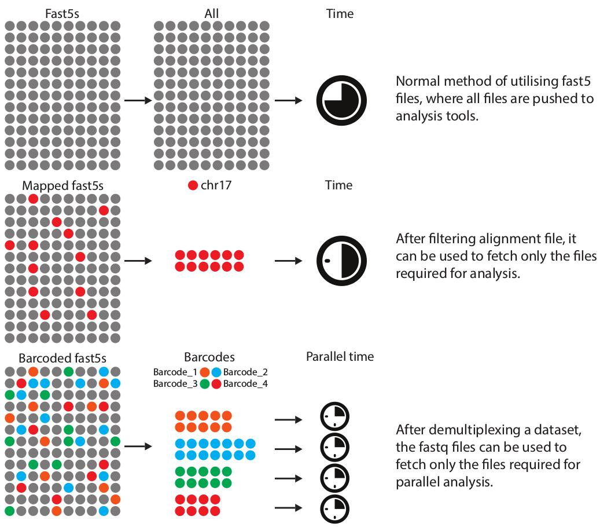

fast5_fetcher
Doing the heavy lifting for you.
fast5_fetcher is a tool for fetching nanopore fast5 files to save time and simplify downstream analysis.
Background
Reducing the number of fast5 files per folder in a single experiment was a welcomed addition to MinKnow. However this also made it rather useful for manual basecalling on a cluster, using array jobs, where each folder is basecalled individually, producing its own sequencing_summary.txt, reads.fastq, and reads folder containing the newly basecalled fast5s. Taring those fast5 files up into a single file was needed to keep the sys admins at bay, complaining about our millions of individual files on their drives. This meant, whenever there was a need to use the fast5 files from an experiment, or many experiments, unpacking the fast5 files was a significant hurdle both in time and disk space.
fast5_fetcher was built to address this bottleneck. By building an index file of the tarballs, and using the sequencing_summary.txt file to match readIDs with fast5 filenames, only the fast5 files you need can be extracted, either temporarily in a pipeline, or permanently, reducing space and simplifying downstream work flows.

Getting Started
Building an index of fast5 files and their paths, as well as a simple bash script to control the workflow, be it on a local machine, or HPC, will depend on the starting file structure.
File structures
See Files and folders section
Inputs
It takes 3 files as input:
- fastq, paf, or flat (.gz)
- sequencing_summary.txt(.gz)
- name.index(.gz)
1. fastq, paf, or flat
This is where the readIDs are collected, to be matched with their respective fast5 files for fetching. The idea being, that some form of selection has occurred to generate the files.
In the case of a fastq, it may be filtered for all the reads above a certain quality, or from a particular barcode after running barcode detection.
For the paf file, it is an alignment output of minimap2. This can be used to fetch only the fast5 files that align to some reference, or has been filtered to only contain the reads that align to a particular region of interest.
A flat file in this case is just a file that contains a list of readIDs, one on each line. This allows the user to generate any list of reads to fetch from any other desired method.
Each of these files can be gzipped or not.
See examples below for example test cases.
2. Sequencing summary
The sequencing_summary.txt file is created by the basecalling software, (Albacore, Guppy), and contains information about each read, including the readID and fast5 file name, along with length, quality scores, and potentially barcode information.
There is a shortcut method in which you can use the sequencing_summary.txt only, without the need for a fastq, paf, or flat file. In this case, leave the -q, -f, -r fields empty.
This file can be gzipped or not.
3. Building the index
How the index is built depends on which file structure you are using. It will work with both tarred and un-tarred file structures. Tarred is preferred.
- Raw structure (not preferred)
for file in $(pwd)/reads/*/*;do echo $file; done >> name.index
gzip name.index
- Local basecalled structure
for file in $(pwd)/reads.tar; do echo $file; tar -tf $file; done >> name.index
gzip name.index
- Parallel basecalled structure
for file in $(pwd)/fast5/*fast5.tar; do echo $file; tar -tf $file; done >> name.index
If you have multiple experiments, then cat them all together and gzip.
for file in ./*.index; do cat $file; done >> ../all.name.index
gzip all.name.index
Instructions for use
If using MacOS, and NOT using homebrew, install it here:
https://brew.sh/
then install gnu-tar with:
brew install gnu-tar
Quick start
Basic use on a local computer
fastq
python fast5_fetcher.py -q my.fastq.gz -s sequencing_summary.txt.gz -i name.index.gz -o ./fast5
paf
python fast5_fetcher.py -p my.paf -s sequencing_summary.txt.gz -i name.index.gz -o ./fast5
flat
python fast5_fetcher.py -f my_flat.txt.gz -s sequencing_summary.txt.gz -i name.index.gz -o ./fast5
sequencing_summary.txt only
python fast5_fetcher.py -s sequencing_summary.txt.gz -i name.index.gz -o ./fast5
See examples below for use on an HPC using SGE
fast5_fetcher.py
Full usage
usage: fast5_fetcher.py [-h] [-q FASTQ | -p PAF | -f FLAT] [--OSystem OSYSTEM]
[-s SEQ_SUM] [-i INDEX] [-o OUTPUT] [-t]
[-l TRIM_LIST] [-x PREFIX] [-z]
fast_fetcher - extraction of specific nanopore fast5 files
optional arguments:
-h, --help show this help message and exit
-q FASTQ, --fastq FASTQ
fastq.gz for read ids
-p PAF, --paf PAF paf alignment file for read ids
-f FLAT, --flat FLAT flat file of read ids
--OSystem OSYSTEM running operating system - leave default unless doing
odd stuff
-s SEQ_SUM, --seq_sum SEQ_SUM
sequencing_summary.txt.gz file
-i INDEX, --index INDEX
index.gz file mapping fast5 files in tar archives
-o OUTPUT, --output OUTPUT
output directory for extracted fast5s
-t, --trim trim files as if standalone experiment, (fq, SS)
-l TRIM_LIST, --trim_list TRIM_LIST
list of file names to trim, comma separated. fastq
only needed for -p and -f modes
-x PREFIX, --prefix PREFIX
trim file prefix, eg: barcode_01, output:
barcode_01.fastq, barcode_01_seq_sum.txt
-z, --pppp Print out tar commands in batches for further
processing
Trimming fastq and sequencing_summary files
By using the -t, --trim option, each barcode will also have its own sequencing_summary file for downstream analysis. This is particularly useful if each barcode is a different sample or experiment, as the output is as if it was it's own individual flowcell.
This method can also trim fastq, and sequencing_summary files when using the paf or flat methods. By using the prefix option, you can label the output names, otherwise generic defaults will be used.
batch_tater.py
Potato scripting engaged
This is designed to run on the output files from fast5_fetcher.py using option -z. This writes out file lists for each tarball that contains reads you want to process. Then batch_tater.py can read those files, to open the individual tar files, and extract the files, meaning the file is only opened once.
A recent test using the -z option on ~2.2Tb of data, across ~11/27 million files took about 10min (1CPU) to write and organise the file lists with fast5_fetch.py, and about 20s per array job to extract and repackage with batch_tater.py.
This is best used when you want to do something all at once and filter your reads. Other approaches may be better when you are demultiplexing.
Usage:
Run on SGE using array jobs as a hacky way of doing multiprocessing. Also, helps check when things go wrong, and easy to relaunch failed jobs.
batch.sge
source ~/work/venv2714/bin/activate
FILE=$(ls ./fast5/ | sed -n ${SGE_TASK_ID}p)
BLAH=fast5/${FILE}
mkdir ${TMPDIR}/fast5
time python batch_tater.py tater_master.txt ${BLAH} ${TMPDIR}/fast5/
echo "size of files:" >&2
du -shc ${TMPDIR}/fast5/ >&2
echo "extraction complete!" >&2
echo "Number of files:" >&2
ls ${TMPDIR}/fast5/ | wc -l >&2
echo "copying data..." >&2
tar -cf ${TMPDIR}/batch.${SGE_TASK_ID}.tar --transform='s/.*\///' ${TMPDIR}/fast5/*.fast5
cp ${TMPDIR}/batch.${SGE_TASK_ID}.tar ./batched_fast5/
Create CMD and launch
CMD="qsub -cwd -V -pe smp 1 -N batch -S /bin/bash -t 1-10433 -tc 80 -l mem_requested=20G,h_vmem=20G,tmp_requested=200G ../batch.sge"
echo $CMD && $CMD